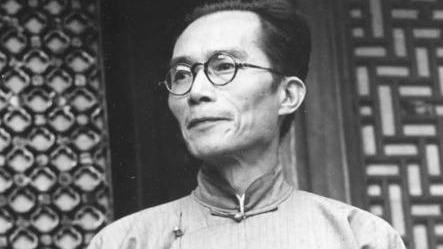
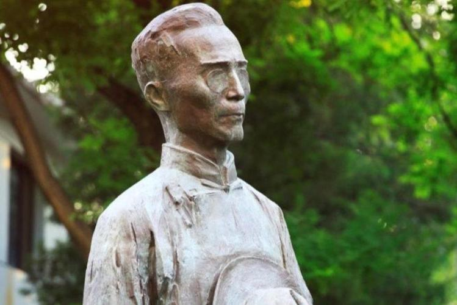
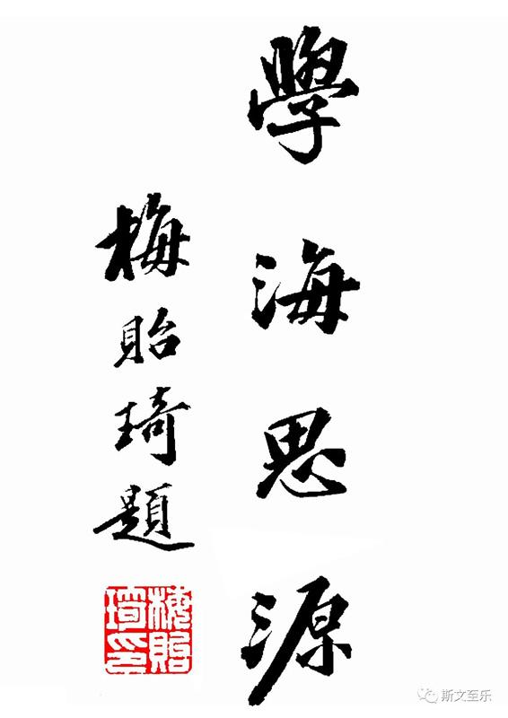

·Introduction

Mei Yiqi's photo
Mei Yiqi (December 29, 1889 - May 19, 1962), courtesy name Yuehan, was a native of Tianjin County (today's Tianjin City), Tianjin Prefecture, Zhili Province.
His ancestors moved from Wujin to Beijing during the Yongle period of the Ming Dynasty. In 1914, he is one of the first batch of students studying in the United States returned from Worcester Polytechnic Institute.
From 1931 to 1948, he served as the president of Tsinghua University.
In 1955, he founded the Tsinghua Institute of Atomic Sciences in Hsinchu, Taiwan and served as the principal.
During his tenure as President of Tsinghua University, Mei Yiqi established the school identity of Tsinghua University and made indelible contributions to Tsinghua University.
During the period, teachers were strictly selected and hired, and a system of collective leadership was implemented.
Together with Ye Qisun, Pan Guangdan, and Chen Yinke, he was listed as one of the four great philosophers in the history of Tsinghua University.
·Biography

Mei Yiqi was born in Tianjin on December 29, 1889.
In 1908, he entered the Baoding Higher School.
In June 1909, Mei Yiqi applied for the first batch of Geng students studying in the United States, and was admitted as the sixth among 630 candidates,
becoming one of the first 47 students studying in the United States.
In the spring of 1915, he returned from studying abroad.
In the autumn of the same year, Mei Yiqi served as a physics teacher at Tsinghua School.
In 1937, during the War of Resistance Against Japanese Aggression, Tsinghua University, Peking University and Nankai University merged into Southwest United University.
Mei Yiqi was appointed as the standing member of the Standing Committee of the National Changsha Temporary University, and the following year as a member of the Standing Committee of the Southwest Associated University. and Chairman.
In 1949, Mei Yiqi went to Paris to attend the UNESCO Science Conference as the chief representative of the delegation.
In May 1960, he was admitted to the National Taiwan University Hospital for recuperation.
On May 19 of the same year, he died at the National Taiwan University Hospital at 10:50 in the morning.
·Thoughts

Mei Yiqi believes that the so-called great scholars are not called buildings, but masters.
Mei Yiqi put forward the core concept of "generalist education". This kind of "generalist education" is not a simple transfer of the Western "Liberal Education",
but an independent thought based on the ancient Chinese Confucian "university" educational thought and the essence of modern Chinese and foreign university education thought system.
Mei Yiqi believes that the direct training goal at the university stage should be "generalist", and it should not and impossible to undertake the task of directly training "specialists" for all walks of life in society.
This task should be undertaken by other educational institutions.
And colleges should focus on doing basic training for students to advance to a higher level.
·Works

"Research on Mei Yiqi's Educational Thought"
"Tsinghua Campus Culture in the 1920s and 1930s"
"Tsinghua Traditional Spirit"
"Masters of Tsinghua"
"Tsinghua Garden Landscape"